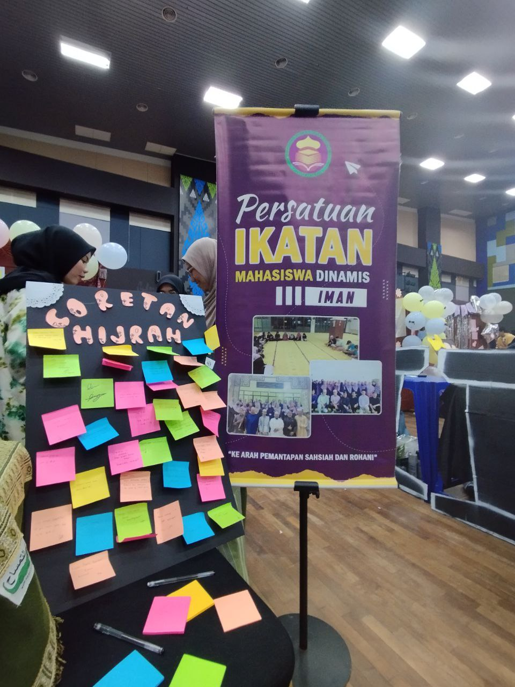
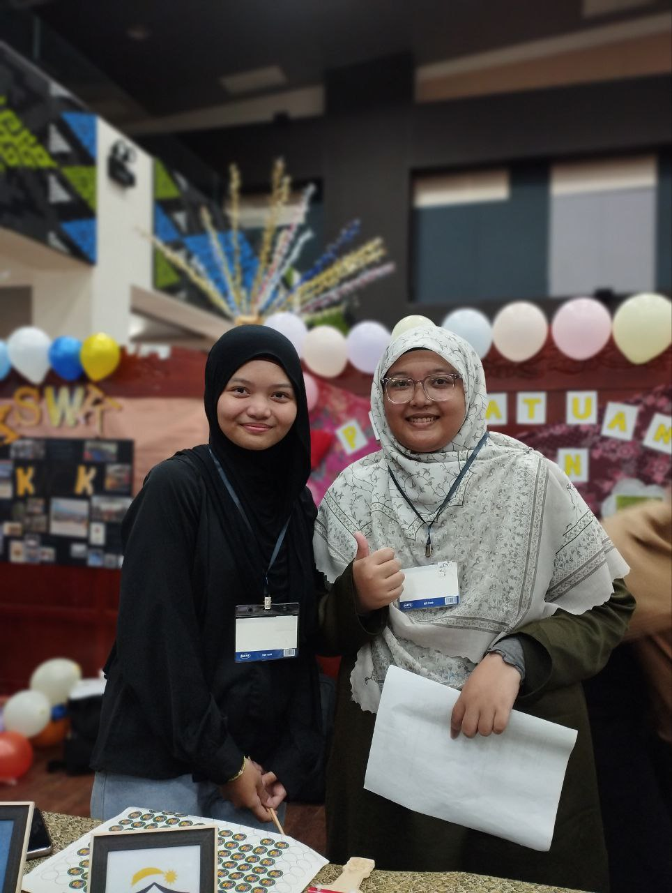
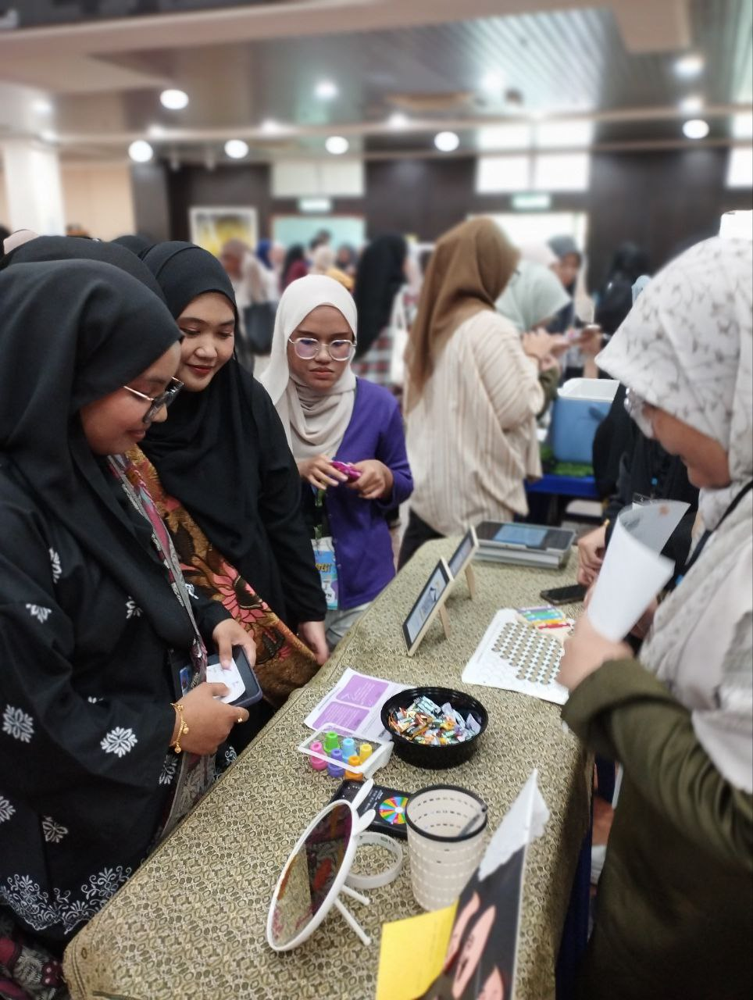
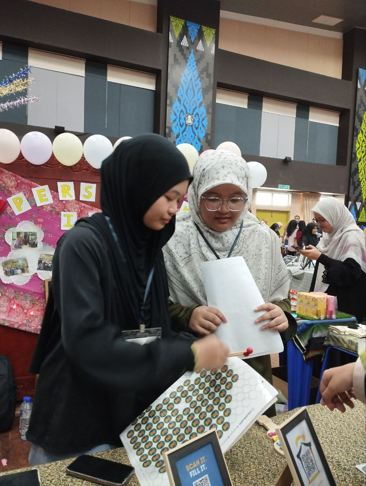
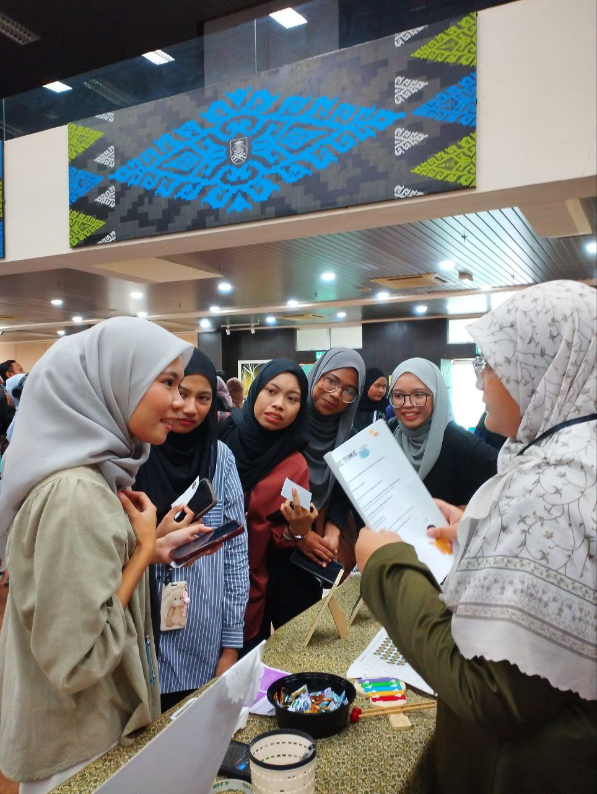

Volunteer, Club Festival
I actively volunteered as AJK during the Club Festival, assisting with event coordination, welcoming participants, and supporting logistics. This experience strengthened my teamwork, communication, and organizational skills while allowing me to contribute to a vibrant student community.




